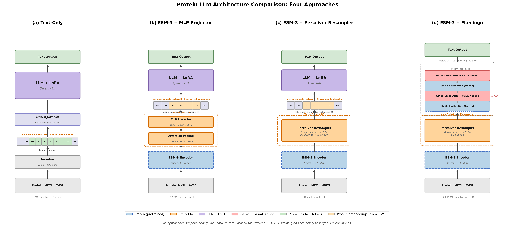
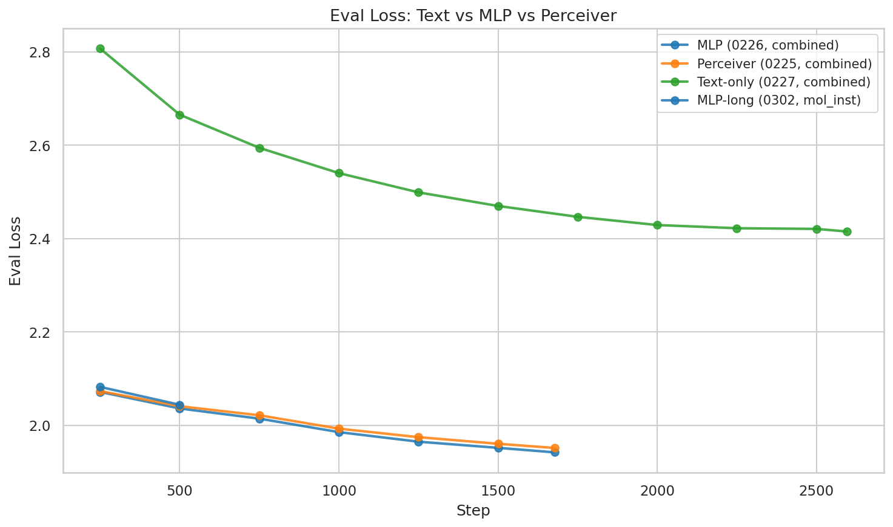
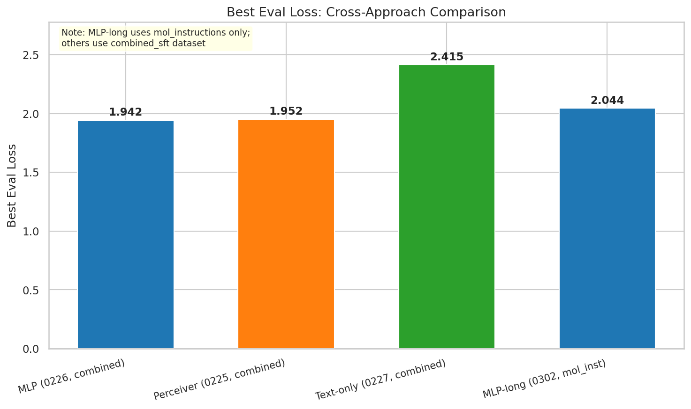
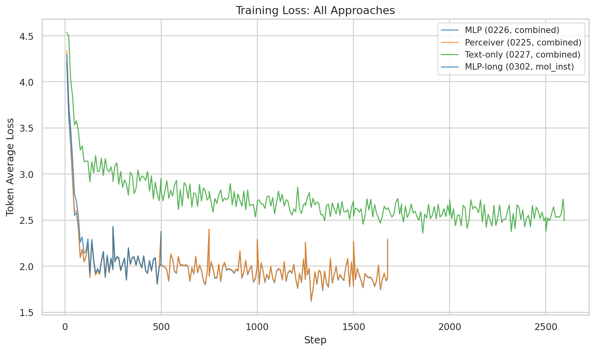
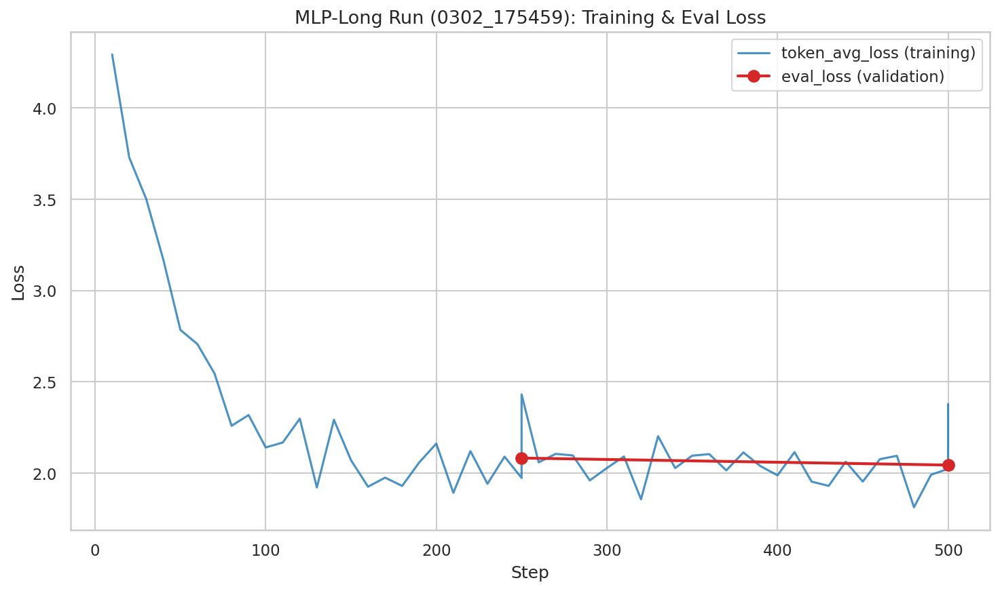
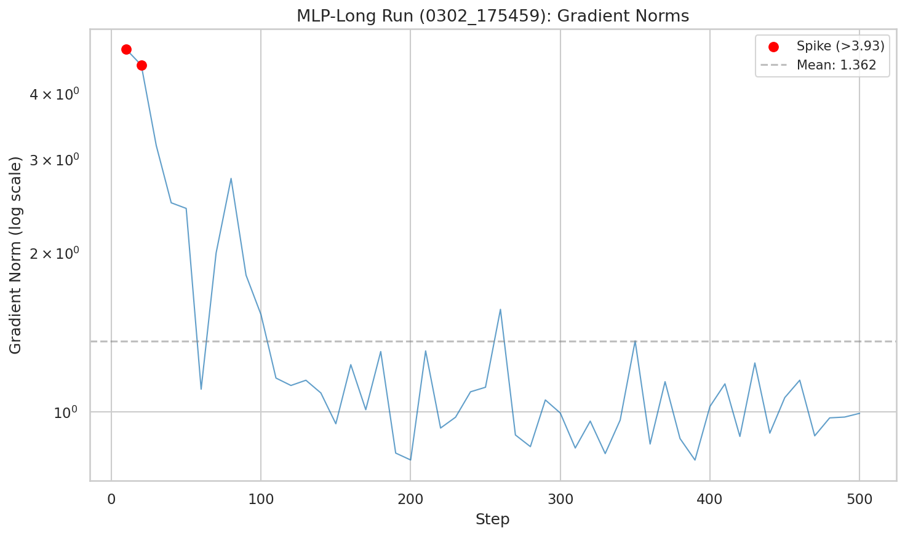
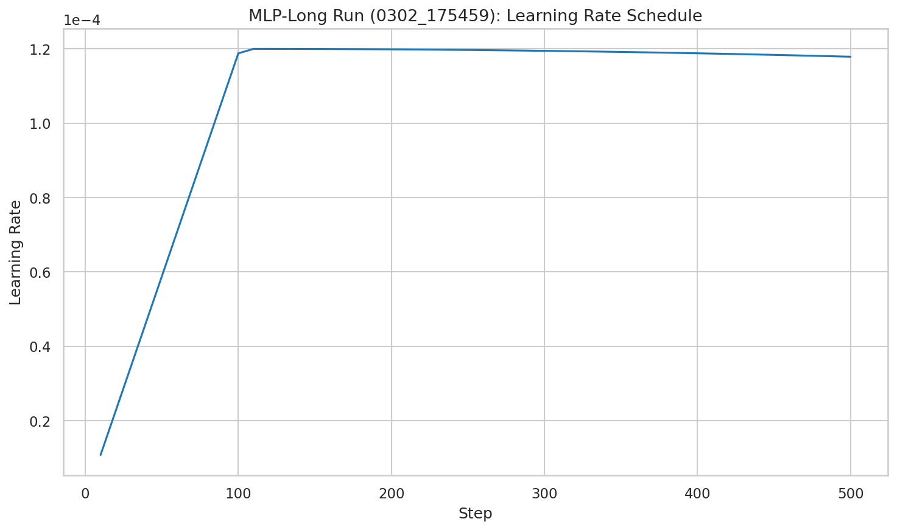
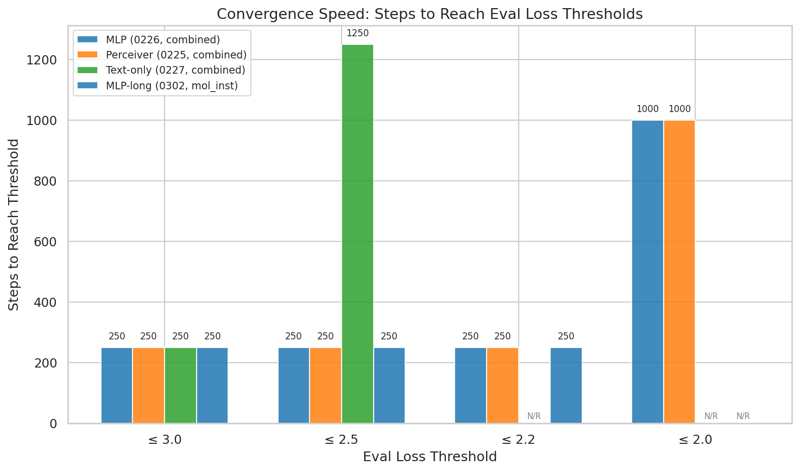

ESM-3 encoder approaches (MLP and Perceiver) achieve approximately 20% lower eval_loss than the text-only baseline (1.94 vs 2.42), confirming that structural protein embeddings provide a substantial advantage for protein understanding tasks. MLP and Perceiver projectors perform nearly identically (best eval_loss 1.942 vs 1.952), suggesting the simpler MLP architecture is sufficient. An extended MLP-long run on Mol-Instructions-only data has reached eval_loss 2.04 at just 10% of training (step 500/4809) and continues to improve, though direct comparison with earlier runs is confounded by different datasets and hyperparameters.
We compare four approaches for integrating protein structural information into a language model. The diagram below illustrates the data flow and trainable components for each approach. All approaches support FSDP (Fully Sharded Data Parallel) for efficient multi-GPU training and scalability to larger LLM backbones.

trainer_state.json (step-level metrics) and wandb API (run summaries)token_avg_loss (true per-token average; NOT HF Trainer running average loss)eval_loss (validation set, computed periodically)| Parameter | MLP (0226) | Perceiver (0225) | Text (0227) | MLP-long (0302) |
|---|---|---|---|---|
| Approach | esm3 | esm3 | text | esm3 |
| Projector | MLP | Perceiver | — | MLP |
| Base model | Qwen3-8B | Qwen3-8B | Qwen3-8B | Qwen3-8B |
| Encoder | ESM-3 small | ESM-3 small | — | ESM-3 small |
| Dataset | combined_sft | combined_sft | combined_sft | mol_instructions only |
| Learning rate | 2e-4 | 2e-4 | 2e-4 | 1.2e-4 |
| Projector LR | 1e-3 | 1e-3 | — | 6e-4 |
| Epochs | 3 | 3 | 3 | 7 |
| Total steps | 1,677 | 1,677 | 2,595 | 4,809 (500 completed) |
| Batch size | 16 | 16 | 16 | 16 |
| Grad accum steps | 4 | 4 | 4 | 4 |
| LoRA r | 8 | 8 | 8 | 8 |
| Status | Complete | Complete | Complete | Partial (10%) |
Dataset caveat: MLP-long (0302) trains on
mol_instructionsonly, while the three completed runs usecombined_sft_260225(4.5M records from multiple sources). This difference, along with the lower learning rate (1.2e-4 vs 2e-4) and longer schedule (7 vs 3 epochs), makes directeval_losscomparisons between MLP-long and the completed runs unreliable.
Both ESM-3 approaches substantially outperform the text-only baseline. MLP achieves best eval_loss of 1.942 and Perceiver 1.952, versus 2.415 for text-only — a 19.6% and 19.2% reduction respectively. This gap is consistent across all evaluation steps, not just at convergence.
The text-only approach processes raw amino acid sequences as tokens (<protein>MKTL...</protein>), requiring the LLM to learn protein structure from scratch. The ESM-3 encoder provides pre-trained structural embeddings (1536-dim) that capture evolutionary and structural information the LLM cannot easily learn from sequence alone.

Figure 1: Evaluation loss over training. ESM-3 approaches (MLP, Perceiver) converge to substantially lower eval_loss than the text-only baseline.
The MLP projector (AttentionPooling + 2-layer MLP, ~30.5M params) and the Perceiver Resampler (~29.4M params) achieve nearly indistinguishable performance: best eval_loss of 1.942 vs 1.952 (0.5% difference). Both converge at step 180 and follow nearly identical loss trajectories throughout training.
Given the architectural simplicity of MLP (fewer hyperparameters, faster forward pass) and the negligible performance difference, MLP remains the recommended default projector.

Figure 2: Final eval_loss by approach. MLP and Perceiver are within 0.01 of each other, both substantially below text-only.
All approaches show an initial token_avg_loss spike in the first 60–70 steps, corresponding to the warmup period. ESM-3 approaches reach a minimum token_avg_loss around 1.62 (MLP: 1.620, Perceiver: 1.627), while text-only bottoms at 2.359 — a 31% gap in training loss floor.
Text-only exhibits more gradient norm spikes throughout training (5 grad spikes vs 1–2 for ESM-3 runs), suggesting less stable optimization when the LLM must learn protein representations from raw sequence tokens.

Figure 3: Training loss (token_avg_loss) across all four runs. ESM-3 approaches converge faster and reach lower loss floors.
The extended MLP-long run (sft_esm3_mlp_long_qwen3_8b_it_0302_175459) has completed 500 of 4,809 steps (~10.4%). At step 500, it shows:
token_avg_loss: 2.023 (minimum reached: 1.813)eval_loss: 2.044 (still decreasing at the last checkpoint)The learning rate schedule shows smooth warmup and the beginning of cosine decay. With 90% of training remaining and eval_loss still on a downward trajectory, this run may ultimately match or surpass the completed MLP run's 1.942 — though the different dataset (mol_instructions-only vs combined_sft) makes this comparison speculative.

Figure 4: MLP-long training loss and eval loss through step 500. Both curves show sustained improvement with no plateau.

Figure 5: MLP-long gradient norms. Stable throughout training with a single spike at step 80 during warmup.

Figure 6: MLP-long LR schedule showing warmup and early cosine decay (1.2e-4 peak).
All four runs reach convergence (defined as <5% loss improvement over subsequent steps) by step 180–200. The MLP-long run converges at step 200 despite its lower learning rate (1.2e-4 vs 2e-4), suggesting that the warmup+cosine schedule provides adequate early adaptation.

Figure 7: Convergence comparison. All approaches stabilize within the first 200 steps.
| Metric | MLP (0226) | Perceiver (0225) | Text (0227) | MLP-long (0302) |
|---|---|---|---|---|
Final token_avg_loss |
2.288 | 2.296 | 2.492 | 2.023* |
Min token_avg_loss |
1.620 | 1.627 | 2.359 | 1.813* |
Best eval_loss |
1.942 | 1.952 | 2.415 | 2.044* |
| Best eval step | 1,677 | 1,677 | 2,595 | 500* |
| Convergence step | 180 | 180 | 180 | 200 |
| Max grad norm | 6.92 | 11.98 | 4.12 | 4.85 |
| Mean grad norm | 1.23 | 1.26 | 1.93 | 1.36 |
| Total steps | 1,677 | 1,677 | 2,595 | 500 / 4,809 |
| Training time (hours) | 11.05 | 11.25 | 15.41 | In progress |
| GPU mem max alloc (GB) | 44.19 | 44.41 | 42.82 | — |
* MLP-long values are at step 500 (10% complete); final metrics will differ.
No NaN or divergence events were detected in any of the four runs. Minor anomalies observed:
eval_loss still improving at step 500 and 90% of training remaining, this run may reveal the performance ceiling of the MLP approach on Mol-Instructions data. Monitor for overfitting as epochs progress (7 epochs total).